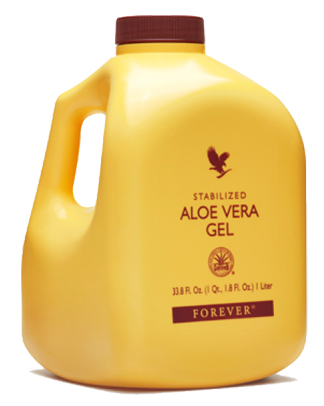

Aloe Vera faktai
Alavijuose gausu maistinių medžiagų, jie pasižymi antioksidacinėmis savybėmis, todėl visų pirma padeda užkirsti kelią epitelinio audinio pažeidimui, o jei audinys pažeidžiamas – skatina jo gijimą.
Antioksidantai neutralizuoja destruktyvų laisvųjų radikalų poveikį. Laisvieji radikalai – nestabilios molekulių dalys, kurios susidaro organizme vykstant medžiagų apykaitai ir kurios aptinkamos aplinką teršiančiose kenksmingose medžiagose. Manoma, kad jie sukelia įvairius sveikatos sutrikimus, įskaitant ir kai kurias vėžio rūšis, taip pat spartina senėjimo procesą. Epitelis –– ląstelių sluoksnis, dengiantis kūną ir išklojantis su išore susisiekiančias kūno vidaus ertmes. Didžiausias epitelinis audinys – oda, tačiau epitelinis audinys taip pat iškloja žarnyną, bronchus ir genitalijas. Todėl nenuostabu, kad alavijai veiksmingi ir pažeidus odą, ir jei skundžiamės žarnyno negalavimais ar vargina astma.

Alavijo sultys
Patentuotos ir stabilizuotos Aloe Vera sultys beveik identiškos šviežiam lapo minkštimui. Sultyse yra visi vitaminai (A, visi B grupės, C, D, E) ir mineralai (geležis, kalcis, kalis, fosforas, kt.), taip pat labai retas vitaminas B12, kuris randamas tik keliuose augaluose. Šios sultys yra labai svarbus maisto priedas vegetarams (nevartojant mėsos organizmui trūksta kai kurių vitaminų ir mineralų).
Sudėtis: 96 proc. Aloe Vera želė, sorbitolis, askorbo rūgštis, citrinos rūgštis, kalio sorbatas, natrio benzonatas, ksantano derva, tokoferolis (vit.E).
Vartojimas: 60 ml (po 30 ml du kartus per dieną prieš valgį užgeriant vandeniu). Prieš pradedant vartoti gerai suplakti. Atidarius laikyti šaldytuve.